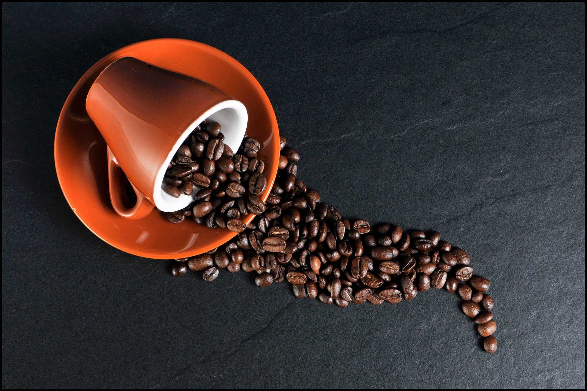
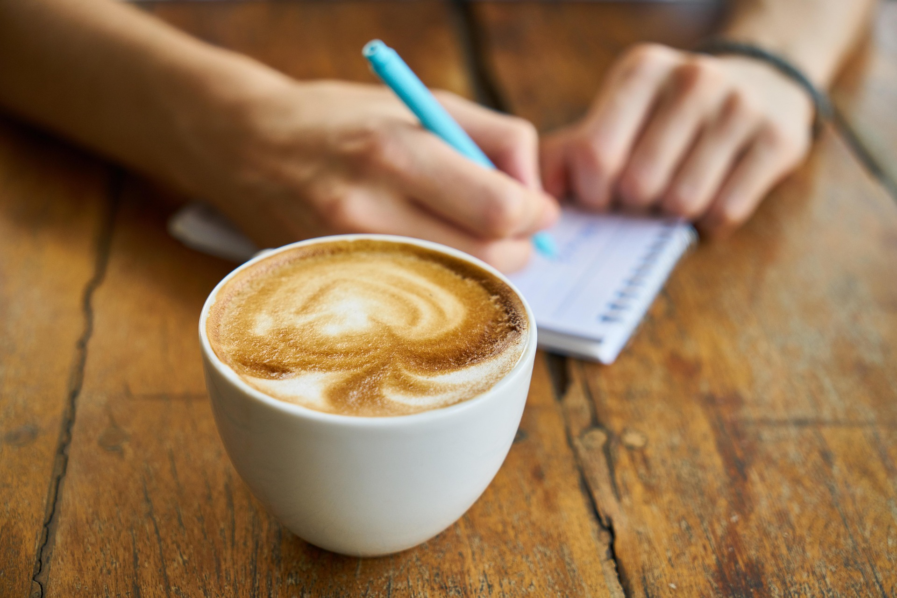
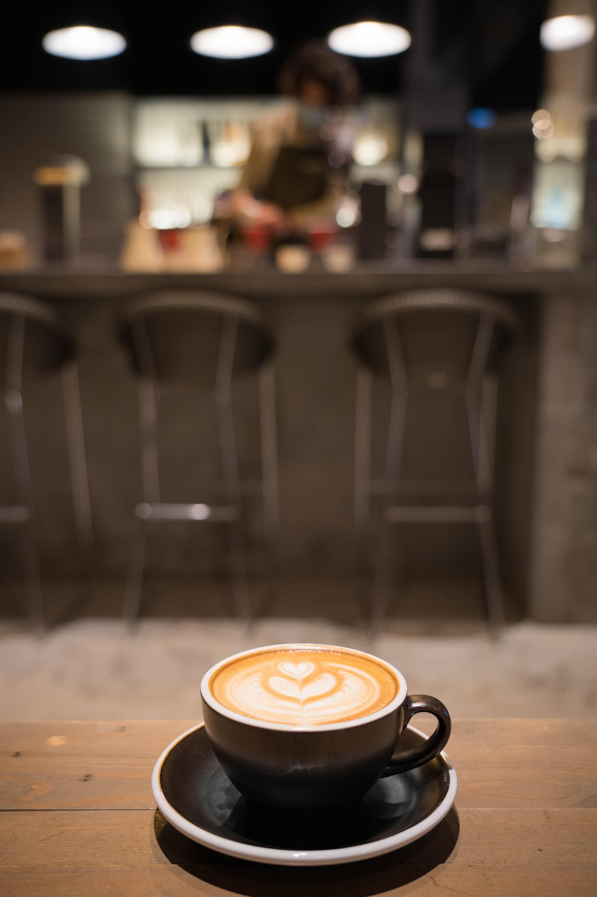

Dery Coffee
Dery Coffee
Começar bem
Pequenos-almoços
Leves, completos e preparados no momento.
O teu café de todos os dias. Um espaço tranquilo onde os melhores grãos, a comida feita em casa e as boas conversas se encontram.

Ingredientes escolhidos com cuidado, receitas honestas e café preparado por quem gosta verdadeiramente do que faz.
Leves, completos e preparados no momento.

Extrações precisas com grãos de origem responsável.

Feitos diariamente, sem atalhos e com muito sabor.
Experimenta uma atmosfera mais verde e tranquila.

Para um café rápido, uma manhã de trabalho ou uma conversa sem pressa. Criámos um espaço simples, confortável e cheio de luz.
Como chegar